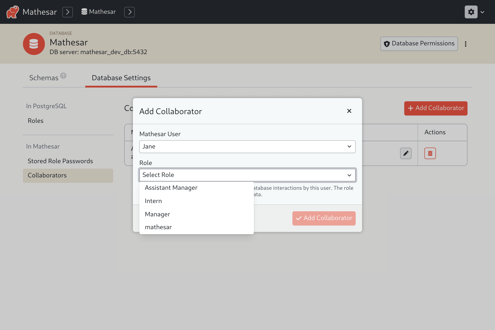
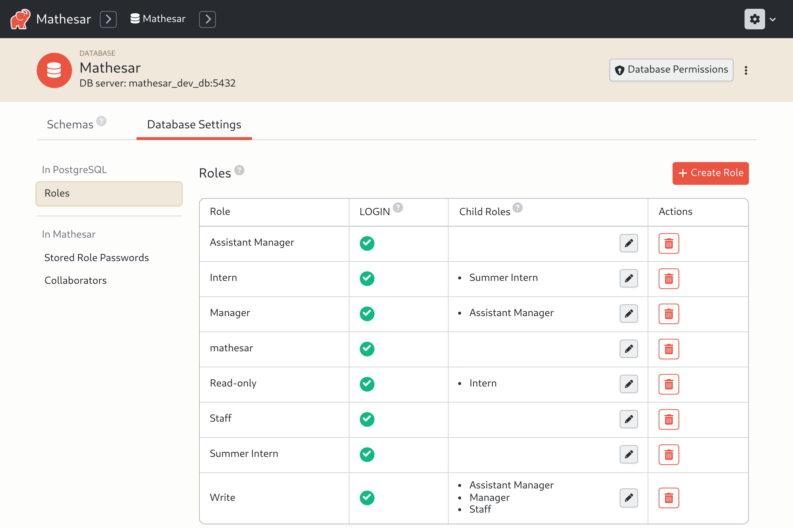
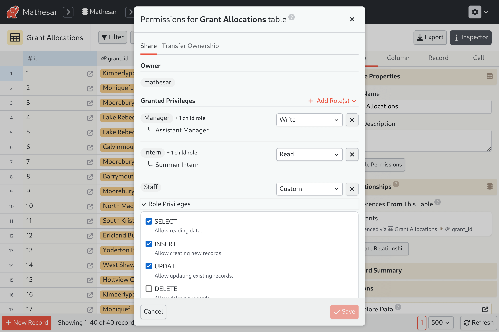
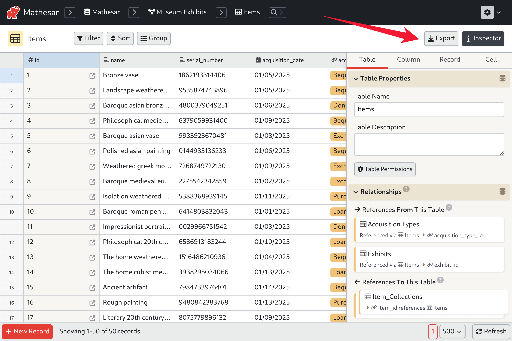
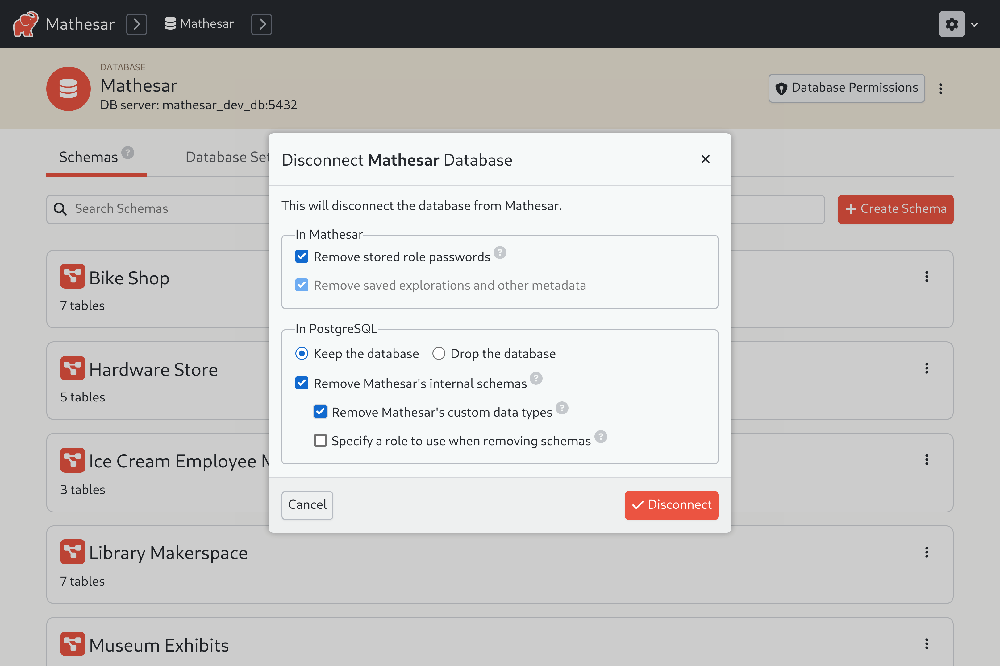
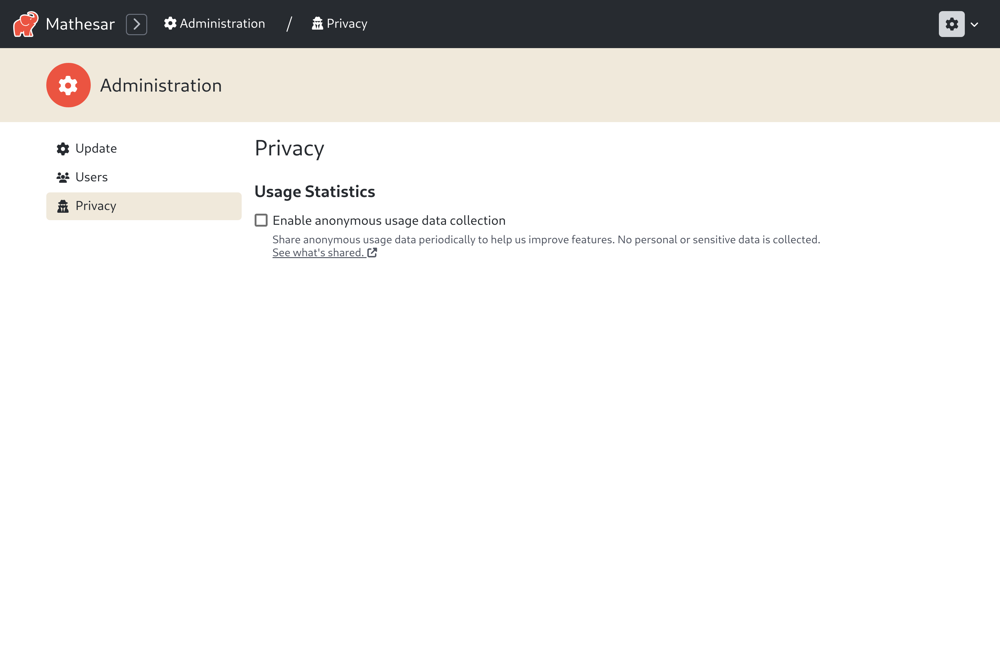

Mathesar 0.2.0 (beta)¶
Summary¶
Version 0.2.0 is Mathesar’s first beta release and features a brand new access control system, massive performance improvements, and an important security fix.
Upgrading directly from previous versions to 0.2.0 is not supported.
Don’t worry—your databases can still be migrated to 0.2.0 using the instructions provided below.
This page provides a comprehensive list of all changes since version 0.1.7.
Security Fixes¶
Fix unauthorized access to cached import data¶
- Risk: Information disclosure
- Severity: Low-medium
- Affected versions: 0.1.0 - 0.1.7
-
Description:
Mathesar has a feature to import data into a new table via uploading a CSV file. During the import process, the uploaded CSV file is cached within Mathesar and never actually deleted.
Prior to version 0.2.0, all authenticated users were able to use Mathesar’s API to read the cached data for all imports which had ever been performed by any user. This could allow one authenticated user to maliciously read another user’s uploaded data. (Anonymous users are not affected — they have never been able to read any cached import data.)
From version 0.2.0 onwards, Mathesar only allows each user to read their own cached import data.
If any of your users might have imported CSV data through Mathesar which they would like to keep private from other users within the same Mathesar installation, then we recommend moving your Mathesar installation to 0.2.0.
-
Fixed via: #4157
-
Work-around:
To mitigate an older version of Mathesar against this vulnerability without upgrading, you can delete all the cached import data files with the following steps.
How to delete your cached import data files
- Run
docker psto identify the name of your running Mathesar container. This is commonly namedmathesar_servicebut might vary depending on how you have installed Mathesar - Run
docker exec -it mathesar_service bashto open a shell within your running Mathesar service container. (Replace “mathesar_service” with the name of your container determined above, if needed.) -
From within the shell, run the following command to list your cached import data files.
-
Run the following command to remove all your cached import data files:
Note that after performing this work-around, subsequent imports will still be vulnerable to this bug until you upgrade to Mathesar 0.2.0.
- Run
Improvements¶
New access control system based on PostgreSQL roles and privileges¶
We’ve completely redesigned Mathesar’s access controls to leverage PostgreSQL’s powerful system of roles and privileges. Each Mathesar user will now be assigned to a specific PostgreSQL role so that all their operations on the underlying database will be performed using that role.

The new system gives Mathesar several new capabilities. You can use Mathesar to configure roles and privileges in PostgreSQL and to set granular access control at the individual schema and table level. Plus Mathesar will respect all these configurations when performed directly in PostgreSQL by database administrators outside of Mathesar. Mathesar also no longer needs a database superuser for day-to-day operations.


#3626 #3663 #3665 #3667 #3684 #3685 #3689 #3710 #3711 #3750 #3760 #3762 #3769 #3781 #3786 #3789 #3795 #3810 #3833 #3836 #3838 #3840 #3858 #3859 #3861 #3869 #3881 #3895 #3922 #3931 #3958 #3966 #3982 #4011 #4024 #4082 #4104 #4132 #4075
Substantial performance improvements¶
Mathesar is now much faster! Most pages load about 5x faster, and large imports run about 50x faster.
Also, you’ll no longer need to manually “sync database schema changes” to Mathesar. Now, any DDL changes will be reflected in Mathesar automatically!
To achieve these gains, we’ve significantly overhauled Mathesar’s backend architecture, moving a large chunk of the application code into the database itself, and migrating to a new API.
#3543 #3547 #3556 #3586 #3588 #3589 #3597 #3598 #3599 #3608 #3610 #3612 #3614 #3615 #3616 #3618 #3620 #3623 #3628 #3632 #3633 #3635 #3637 #3641 #3646 #3648 #3649 #3650 #3651 #3653 #3664 #3666 #3669 #3672 #3676 #3691 #3694 #3696 #3698 #3699 #3700 #3702 #3703 #3704 #3708 #3709 #3717 #3718 #3721 #3723 #3725 #3728 #3731 #3740 #3741 #3745 #3746 #3748 #3749 #3751 #3754 #3755 #3759 #3761 #3767 #3771 #3782 #3783 #3791 #3796 #3799 #3800 #3802 #3803 #3804 #3807 #3808 #3809 #3811 #3813 #3814 #3819 #3821 #3823 #3824 #3825 #3831 #3832 #3837 #3843 #3845 #3847 #3850 #3852 #3853 #3855 #3856 #3857 #3866 #3873 #3879 #3884 #3885 #3892 #3893 #3894 #3897 #3909 #3940 #3948 #3974 #3976 #3978 #3979 #3983 #3984 #3987 #3996 #4015 #4016 #4021 #4026 #4035 #4040 #4116 #4123 #4046 #4065 #4073 #4105
Table exports¶
You can now use Mathesar to export a table to a CSV file. Any filters and sorting that you’ve applied to the table will be reflected in the exported data. And all relevant records will be included in the export, even if they are not shown on the current page within Mathesar.

More options when disconnecting a database¶
When disconnecting a database from Mathesar, you can now choose to remove the Mathesar schemas from the database.

Small usability improvements¶
- Persist visibility of table inspector sections #3997
- Default to case-insensitive comparison when filtering records #4131
- Prevent
Enterkey from mistakenly altering filter value #4078 - Make the top navigation header behave more consistently #4072 #4101
- Improve alignment of numeric fields on record page #4077
- Highlight newly-created items #4089 #4109
- Add entity type names to database and schema pages #4107
- Simplify the schema page #4112
- Improve the data explorer layout #4115
- Show a loading spinner for tale pages #3602
- Improve visual style and aesthetics #3860 #3962 #3970 #3998 #4047
More sample data¶
Mathesar now give you the option to load several new sample data sets when connecting a database.
Optional (anonymous) usage reporting¶
To help us better understand the ways in which people are using Mathesar, we’ve added a new feature which periodically reports anonymous usage data about each Mathesar installation to the maintainers team. Upon installing (or upgrading to) Mathesar 0.2.0, Mathesar will give you an opportunity to opt out of usage data collection if you so choose. You can access this setting later by visiting the “Administration” > “Privacy” page within Mathesar.
This usage data will help us make Mathesar better! And it will help us demonstrate Mathesar’s traction and impact to potential donors — so we encourage you to enable it.

We do not collect any personal or sensitive data!
Here is a sample of the anonymous usage data we collect:
{
"installation_id": "5f0126e9-02b0-451f-8797-6e2574b69814",
"mathesar_version": "0.2.0",
"user_count": 12,
"active_user_count": 8,
"configured_role_count": 2,
"connected_database_count": 6,
"connected_database_schema_count": 35,
"connected_database_table_count": 169,
"connected_database_record_count": 1164525,
"exploration_count": 0
}
Bug fixes¶
- Fix error when trying to reset password of other user #3536
- Handle negative numbers correctly when copying cells #3582
- Fix several subtle bugs related to selecting cells in a sheet #3037 #3968 #3973
- Fix timeout when installing Mathesar on a remote DB #3917
- Sort list of schemas #4050
- Allow users to hover over record-level error messages #4087
- Allow scrolling on “Create Superuser” page #4093
- Fix alignment of numbers in cells for some font families #4097
- Fix 404 error from server side navigation to New User page #4106
- Fix Save & Discard buttons always shown when viewing user #3971
- Improve error handling when attempting to import unsupported file types #4028
- Keep record selector open when double-clicking on linked record cell #4043
- Fix redundant schema name in page titles #4074
Documentation¶
New User Guide¶
We’ve overhauled our User Guide to document all new features and more thoroughly explain the inner-workings of Mathesar. You might even learn a thing or two about PostgreSQL by reading it!
More in-app help¶
You’ll also find more help within the application itself. Look for small gray help bubbles to explain concepts and provides links to more detailed information within the User Guide.
Multi-versioned documentation¶
Our documentation site https://docs.mathesar.org/ now features documentation for multiple Mathesar versions. See the version-switcher within the top navigation bar to read documentation for older versions of Mathesar.
Features removed¶
Sharable tables and explorations are no longer available¶
Back in version 0.1.3, we added support for “sharing” tables and explorations via a link that would allow anonymous users to view data. In Mathesar 0.2.0, we’ve removed this feature in order to speed up the development of our new PostgreSQL-based access control system. If you were relying on this feature, we’d like to hear from you! Please open an issue to let us know.
Mathesar’s internal database may no longer be SQLite¶
Version 0.2.0 removes support for SQLite as an internal database. If you were relying on this feature, we’d like to hear from you! Please open an issue to let us know.
Mathesar’s live demo is no longer active¶
We have removed the code and infrastructure which supported Mathesar’s live demo.
#3538 #3551 #3577 #3579 #3580 #3581
Maintenance¶
The following PRs represent work done to reduce technical debt, update dependencies, improve developer documentation, and maintain our workflows.
#3360 #3535 #3541 #3544 #3546 #3552 #3558 #3559 #3564 #3567 #3568 #3569 #3587 #3604 #3643 #3678 #3695 #3763 #3918 #3920 #3938 #3939 #3943 #3947 #3949 #3950 #3959 #3961 #3964 #3972 #3975 #3981 #3985 #3988 #3989 #3990 #3991 #3994 #3999 #4025 #4032 #4039 #4045 #4060 #4064 #4076 #4125 #4133 #4145 #3980 #4158 #4159 #4165 #4152 #4170
Migrating to 0.2.0 from previous versions¶
Mathesar 0.2.0 is our first beta release. As such, direct upgrades from our alpha versions are not supported.
However, you can migrate the databases created in older versions to work with 0.2.0 by following the steps below.
Migration Overview¶
- What you can migrate: the databases you’ve created/connected and the data within them.
- What you cannot migrate: user accounts, passwords, explorations, and metadata.
- Here’s what we’ll do:
- Take note of the databases you’ve created or connected in your current Mathesar setup.
- Install Mathesar
0.2.0. - Reconnect the databases you had before.
When should I perform these steps?
- If any of your connected databases reside inside Mathesar’s internal database server (inside Docker containers), then you will need to perform these steps.
- If all of your connected databases reside in PostgreSQL servers outside the Mathesar’s Docker containers, then you could install 0.2.0 and reconnect your databases.
For installations using Docker Compose¶
These instructions are for if you have a Docker compose installation (including one from the guided script).
These steps assume that you’re using our provided docker-compose.yml file, and the installation directory is /etc/mathesar.
If you have installed Mathesar in a different location or heavily modified the docker-compose.yml, you may need to change some details of the provided commands.
-
With your old version of Mathesar still running, log into your internal database server:
(This assumes your installation DB role is
mathesar. Modify if necessary.) -
At the
psqlprompt, run:- The above SQL query will provide the list of connected database names along with their hosts and port.
- Copy and paste them in a text file somewhere. We will need them after installing 0.2.0.
-
Then create a temporary database:
-
Log out with Ctrl+D, and log into the
mathesar_tempdatabase: -
Then drop the old Mathesar Django database, and create a new one:
(Modify
mathesarabove to set the owner to whichever role you use to run Mathesar.) -
Log out with Ctrl+D, and log into your new
mathesar_djangodatabase: -
Then drop the temporary database:
-
Log out with Ctrl+D.
-
Stop Mathesar.
-
Rename the old docker-compose file.
-
Download the 0.2.0 docker-compose.yml file and place it within
/etc/mathesar. -
Modify it as per the installation instructions, using values from your old
docker-compose.old.ymlfile. -
Run the command below:
-
After Mathesar starts, connect to the databases using the “Connect to an Existing Database” option on the UI.
- Use the db_name, host, and port information from the previous database backup list to fill the form.
- For the
mathesar_dbhost, the Role Name and Password can be found from the values ofPOSTGRES_USERandPOSTGRES_PASSWORDenvironment variables. - The values for these environment variables can be found in the
docker-compose.ymlfile, or if you’ve customized them, in your.envfile. - The default values for them are
mathesarandmathesar. - If you have any external hosts (other than
mathesar_db), you should probably have the postgres user and passwords with you.
For installations done from scratch¶
For these instructions, you’ll need to be familiar enough with your setup to log into your internal Mathesar Database.
These steps assume that the installation directory is /etc/mathesar.
If you have installed Mathesar in a different location, you may need to change some details of the provided commands.
-
Log into your
mathesar_djangodatabase, and run:- The above SQL query will provide the list of connected database names along with their hosts and port.
- Copy and paste them in a text file somewhere. We will need them after installing 0.2.0.
-
Then create a temporary database:
-
Log out with Ctrl+D, and log into the
mathesar_tempdatabase. -
Then drop the old Mathesar Django database, and create a new one:
(Modify
mathesarabove to set the owner to whichever role you use to run Mathesar.) -
Log out with Ctrl+D, and log into your new
mathesar_djangodatabase. -
Then drop the temporary database:
-
Log out with Ctrl+D.
-
Stop Mathesar if it’s running.
-
Delete your previous Mathesar installation directory
-
Install Mathesar 0.2.0 using the installation steps in the same location:
/etc/mathesar. You would not have to setup a PostgreSQL database since you already have one running. -
After Mathesar starts, connect to the databases using the “Connect to an Existing Database” option on the UI.
- Use the db_name from the previous database backup list to fill the Database Name in the form.
- The Host name would be same as the value of
POSTGRES_HOSTenvironment variable for the databases created via Mathesar. - The Role Name and Password can be found from the values of
POSTGRES_USERandPOSTGRES_PASSWORDenvironment variables. - The values for these environment variables can be found in your
.envfile. - If you have any external hosts (other than the one in
POSTGRES_HOST), you should probably have the postgres user and passwords with you.